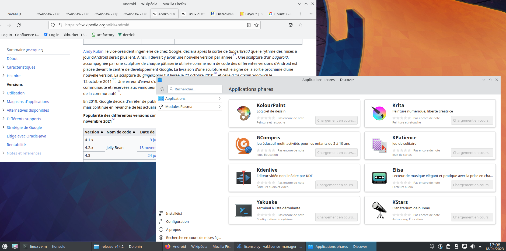
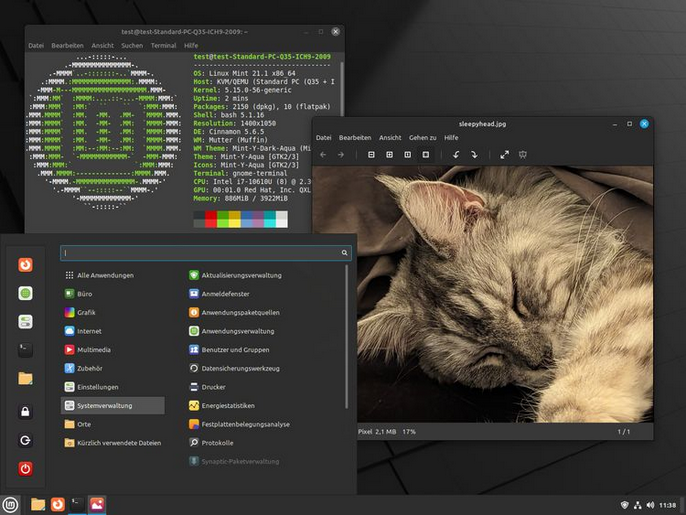
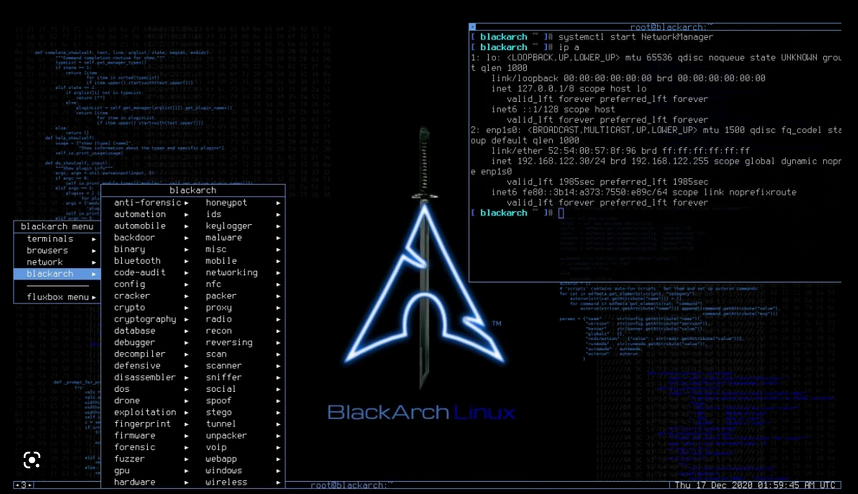

Main points:
- An Operating System provides a Kernel, Services and applications to use a Device.
- All Operating Systems are not equivalent and can adopt different strategies to achieve different goals.
Main points:
- First released on September 17, 1991, by Linus Torvalds.
- Linux is an Unix-Like Operating System.
- All is a given as a file.
- It is Open Source.
Main points:
- Linux distribution(often abbreviated as distro) is an operating system made from a software collection that includes the Linux kernel, and often a package management system.
- Some distribution are used to achieve a specific goals(Multimedia, Security...)


